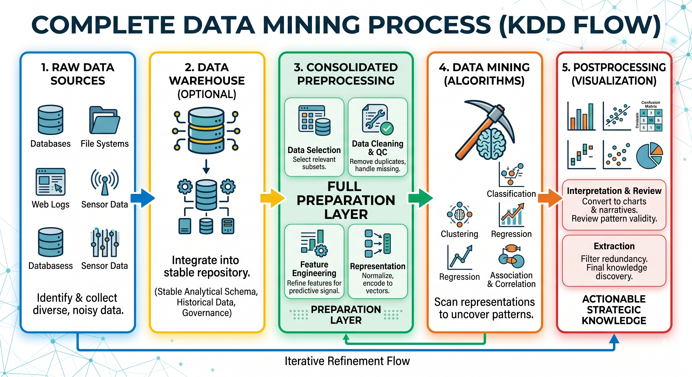
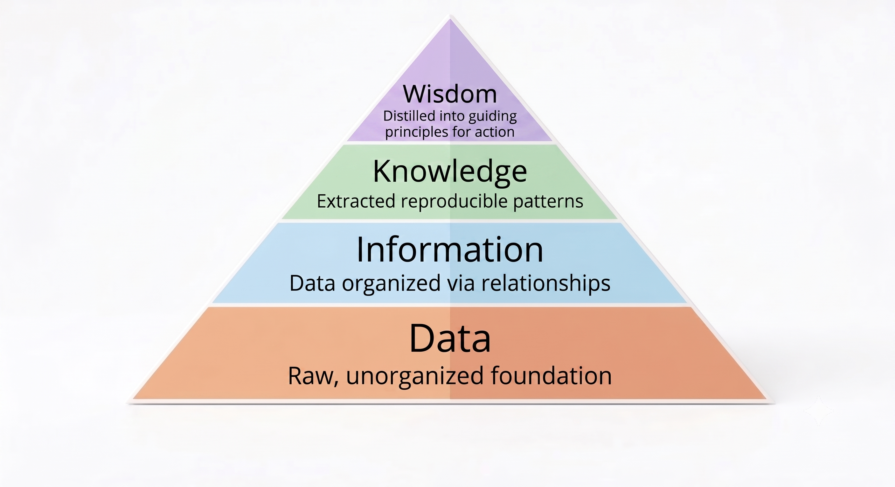

From Raw Data to Knowledge: A Practical Introduction to Data Mining

Why Data Mining?
As we explored in The Essence of Data: A Snapshot of the World's Underlying Logic previously, raw data is essentially a snapshot of the world's underlying logic. We collect it because we fundamentally assume that hidden "engines"—human behaviors, economic shifts, or physical laws—leave behind structural footprints.

However, just as keeping a shoebox full of paper receipts does not automatically reveal your monthly spending habits, simply possessing these snapshots does not mean the underlying engine will reveal itself. This leads to a critical question: How do we bridge the massive gap between collecting messy, raw footprints and generating actionable wisdom?
Is executing simple database queries enough? Can we rely on basic statistics, or must we employ more robust methods to uncover deep insights? Furthermore, how do we systematically discover hidden patterns that remain predictive in the real world, rather than simply memorizing historical data? These questions bring us to the core of today’s topic: Data Mining—a field dedicated to extracting meaningful, actionable intelligence from complex datasets.
What Is Data Mining?
Data Mining vs. Data Retrieval
To begin, we must clear up a common misconception: data mining is not the same as simple data retrieval. Although the two terms may sound similar, data retrieval is a deterministic task that does not require analytical depth.
What, then, is data mining? Broadly speaking, data mining refers to the non-trivial extraction of implicit, previously unknown, and potentially useful information from data.
- Non-trivial: This process goes far beyond executing simple queries or calculating basic sums. It requires sophisticated algorithms to identify correlations and patterns that are not immediately apparent to the human eye.
- Implicit & Unknown: The goal is to uncover hidden knowledge, insights that are not stored explicitly in the database but are buried within the relationships and trends of the data.
- Actionable: The output must have utility; it should drive strategic decision-making or provide predictive value.
By distinguishing between data retrieval and data mining, we shift our focus from merely reporting on the past to uncovering the patterns that define the future.
⚠️ What It Is Not?
Tasks that rely on simple retrieval or continuous monitoring without pattern generation do not constitute data mining. Looking up a phone number, querying a search engine for a specific term, or simply monitoring a patient's real-time heart rate on a screen fall outside the scope of genuine data mining.
Why exclude trivial extraction? Querying a database is a deterministic process (asking "how many?"). Data mining, by contrast, is an exploratory process (asking "why?" or "what next?"). A true data mining pattern is defined by its generalizability, its ability to remain accurate and relevant when applied to entirely new, unseen data, rather than just tightly fitting to the historical data it was trained on.
The Hierarchy of Data Mining: From Raw Data to Wisdom
Now that we have a working definition of data mining, we can see that the term covers several different kinds of activity in practice. Organizing relationships within an unstructured body of information can already be regarded as a form of data mining. Uncovering hidden, recurring patterns within that information is also data mining. And when those insights are distilled into more general principles that inform real decisions, that too remains within its scope. At first glance, these activities may seem quite different from one another. In reality, however, they all describe the same upward movement: from raw material toward increasingly meaningful forms of understanding. Seen in that light, data mining is not a collection of isolated cases, but a connected process that can be organized into a clear hierarchy.

At each tier of this hierarchy, the data undergoes a fundamental shift in abstraction. But this upward movement does not happen automatically; it is an active process of hypothesis and verification.
- Data (The Snapshots): It begins with raw data—the chaotic footprints left behind by real-world events. On its own, it lacks context.
- Information (The Hypothesis): We don't just stare at the data; we hypothesize that a specific underlying structure exists (e.g., "Customers might fall into distinct shopping groups"). By structuring the raw data and defining relationships based on these guesses, we elevate it into meaningful Information.
- Knowledge / Insight (The Verification): This is where Data Mining algorithms step in. Algorithms are not magic; they are the analytical flashlights we use to verify our hypotheses. When an algorithm successfully extracts a stable, reproducible pattern that confirms (or refutes) our structural guess, Information transforms into actionable Knowledge (Insight).
- Wisdom (The Action): Ultimately, when that Knowledge is distilled into core principles that dictate real-world action—like launching a targeted marketing campaign or blocking a fraudulent transaction—it transforms into true Wisdom.
This gradual progression helps us separate meaningful signals from background noise. With these conceptual foundations in place, the next step is examining the systematic pipeline used to actually execute this verification process.
A Systematic Pipeline: Executing the Discovery
We now understand the theoretical journey from raw snapshots to actionable wisdom. But how do we actually execute this hypothesis-and-verification process in reality?
Raw data is chaotic. Algorithms are not magic boxes that can simply read a "shoebox of receipts" and output business strategies; they are strictly mathematical tools. If we feed them unformatted data—such as missing values, duplicate entries, or obvious typos (like recording a customer's age as 999)—the algorithm will not instinctively know these are human mistakes. It will treat them as absolute numerical facts, weaving those errors directly into the final calculation. This is the simple logic behind the famous "garbage in, garbage out" trap.
Furthermore, having perfectly clean data only gives an algorithm the opportunity to learn correctly; it does not guarantee success. Even with pristine data, a naive analytical approach can still fail to discover the true, underlying engine in many different ways. One of the most common and dangerous examples of this failure is overfitting—when a model simply memorizes the historical data.
🔍 What is Overfitting?
Overfitting occurs when an algorithm learns the training data too well. Instead of capturing the true underlying "engine" (the generalizable signal), it absorbs all the random fluctuations, errors, and noise (the messy footprints). As a result, it performs flawlessly on the data it has already seen, but fails drastically when confronted with new, unseen real-world scenarios.
To avoid these critical traps—whether it is garbage data, incompatible formats, or overfitted models—we cannot rely on a single algorithm. Instead, we rely on a structured, end-to-end pipeline (often referred to as the Knowledge Discovery in Databases, or KDD process). In practice, this means we first gather source data, optionally organize it in a warehouse, rigorously preprocess it, mine it, and finally interpret the results.
-
Data Source
The process begins by identifying and collecting raw source data from the relevant environment, such as transaction logs, operational records, interaction traces, or sensor outputs. At this point, the data is still heterogeneous and often noisy. The point of this stage is not yet to model patterns, but to establish the upstream raw material from which discovery can later emerge.
-
Data Warehouse (Optional)
In many industrial settings, organizations add a warehouse layer between raw source systems and mining workflows. This optional stage integrates data from multiple upstream systems into a more stable analytical repository, often with standardized schemas, historical snapshots, and governance controls. Conceptually, this stage does not replace preprocessing; it improves consistency, traceability, and reuse before preprocessing begins.
-
Data Preprocessing
Next comes the crucial stage of data preprocessing. Since we already know that feeding messy data into an algorithm leads to the "garbage in, garbage out" trap, this stage serves as our purification plant. In this article, we keep preprocessing as one coherent main flow that includes four tightly connected sub-tasks:
Seen this way, preprocessing is the full preparation engine: selection narrows scope, cleaning repairs quality, feature refinement sharpens signal, and transformation maps the result into model-compatible representations.
- Data selection: Isolating the subset of data relevant to the target task. For example, if a retail store wants to predict holiday shopping trends, it might select transaction records from the past three Decembers while excluding unrelated logs such as employee attendance.
- Data cleaning and quality control: Handling missing data, eliminating duplicates, and correcting inconsistent records so that the dataset reflects reality as faithfully as possible.
- Feature refinement and selection: Filtering out irrelevant or redundant attributes to focus on variables that carry actual predictive signal.
- Data transformation and representation: Converting data into mining-ready forms, such as normalized scales, encoded categorical variables, numerical vectors, or structured matrices that algorithms can process reliably.
-
Data Mining
Only then does the actual Data Mining occur. This is the moment we turn on our "analytical flashlights" to verify our initial hypotheses. Utilizing intelligent methods, the algorithms scan the preprocessed representation to surface valuable insights among thousands of candidate patterns. Depending on the objective, practitioners deploy specific algorithms designed to achieve distinct analytical goals:
- Clustering: Grouping similar data points together based on shared characteristics without using predefined labels.
- Classification: Assigning new data points into distinct, predefined categories (such as sorting emails into "spam" or "inbox").
- Regression: Modeling relationships between variables to predict continuous, fluid numerical values (such as real estate prices).
- Association & Correlation: Uncovering hidden relationships between items (like products frequently bought together) and measuring the mathematical strength of those dependencies.
-
Postprocessing
Finally, the pipeline concludes with Postprocessing, which bridges the gap between raw algorithmic output and strategic execution. This phase ensures that abstract mathematical configurations are translated into intuitive charts, graphs, narratives, or business logic. By prioritizing the visualization of results, interpretation of mined patterns, and filtering out of redundant findings, postprocessing allows human decision-makers to interpret conclusions clearly and extract true, actionable knowledge.
Bridging the Gap: Moving from Computation to Action
The pipeline is not just an operational checklist; it is also the mechanism that moves us upward through the hierarchy from raw data toward usable knowledge. Data Source establishes the raw observational substrate. Where needed, an optional Data Warehouse layer consolidates and stabilizes those inputs for analytical reuse. Preprocessing then performs the heavy lifting: selecting relevant scope, cleaning quality defects, refining signal-carrying features, and transforming structure so that underlying patterns become legible rather than buried in noise. Once data mining extracts stable patterns from that representation, the process has effectively moved from raw data toward reproducible knowledge. Postprocessing completes the journey by turning those patterns into explanations, decisions, and practical actions that humans can actually use.
From Snapshot to Hypothesis, Not Certainty
Even when data mining surfaces strong and useful patterns, we should not treat those patterns as the only necessary reading of reality. A dataset is always a snapshot captured under particular conditions, and the deeper mechanisms that could have produced that snapshot are often multiple rather than singular. In that sense, mining results are better understood as disciplined hypotheses about what may be happening beneath the surface, not as final proof of one uniquely true explanation.
To reason more accurately about those underlying mechanisms, we usually need to combine mined patterns with domain-grounded evidence. In baseball analytics, that may mean watching games and understanding tactical context rather than relying on box scores alone. In recommender-system design, that may mean conducting case studies, reviewing product flows, and examining real usage scenarios in addition to analyzing logged behavior. The broader the evidence base, the more complete and trustworthy the resulting insight becomes.
Summary
The overarching lesson of this article is that data mining is not a single algorithm, but an end-to-end process for turning raw data into increasingly useful forms of understanding. Meaningful patterns do not emerge automatically from stored records; they move from data source acquisition (and optionally a warehouse layer) into preprocessing (selection, cleaning, refinement, transformation), then into mining and interpretation.
By distinguishing trivial retrieval from genuine discovery, organizing the field through a hierarchy of abstraction, and grounding the work in a structured pipeline, we get a clearer picture of what data mining actually does. The more specialized topics—data understanding, data quality, preprocessing, supervised learning, and unsupervised learning—can then be explored in their own dedicated articles without overloading the main introduction.
Review Kit
QA Generator Prompt
You are given a set of notes or an article.
Read and understand the content, then generate approximately 20 questions.
Requested question type(s): ["mcq"]
Most questions should be drawn directly from the material, focusing on key concepts, definitions,
and core ideas, while a smaller portion can be creative or application-based,
extending the material into real-world or novel scenarios but staying conceptually grounded.
Include a mix of difficulty levels—beginner, intermediate, advanced, and professional.
For each question, provide the question number, type (conceptual, application, analytical),
difficulty, topic, the correct answer, and a brief explanation.
If the requested question format requires options (for example MCQ), include the necessary answer choices.
Focus on clarity, relevance, and meaningful application, avoiding trivial or overly obscure details.You are given a set of notes or an article.
Read and understand the content, then generate approximately 20 questions.
Requested question type(s): ["mcq"]
Most questions should be drawn directly from the material, focusing on key concepts, definitions,
and core ideas, while a smaller portion can be creative or application-based,
extending the material into real-world or novel scenarios but staying conceptually grounded.
Include a mix of difficulty levels—beginner, intermediate, advanced, and professional.
For each question, provide the question number, type (conceptual, application, analytical),
difficulty, topic, the correct answer, and a brief explanation.
If the requested question format requires options (for example MCQ), include the necessary answer choices.
Focus on clarity, relevance, and meaningful application, avoiding trivial or overly obscure details.References
- NUS CS5228 Knowledge Discovery and Data Mining Course Materials